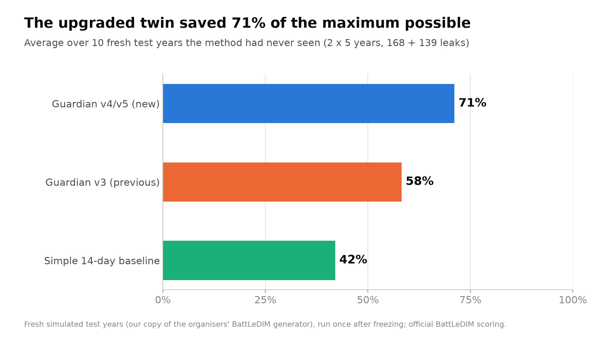
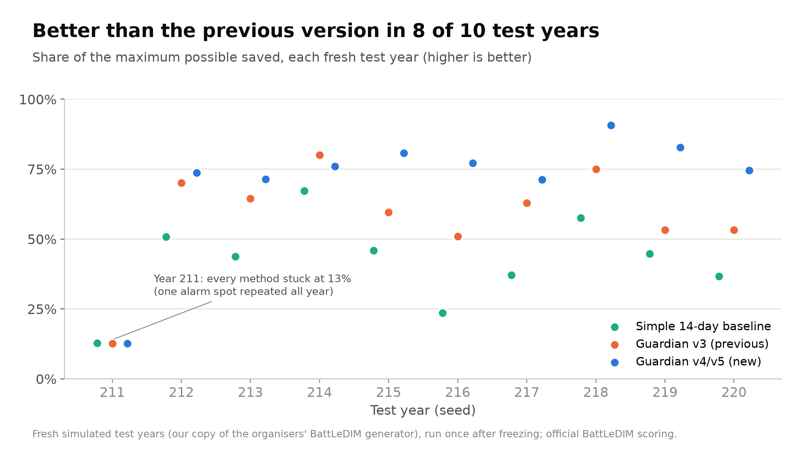
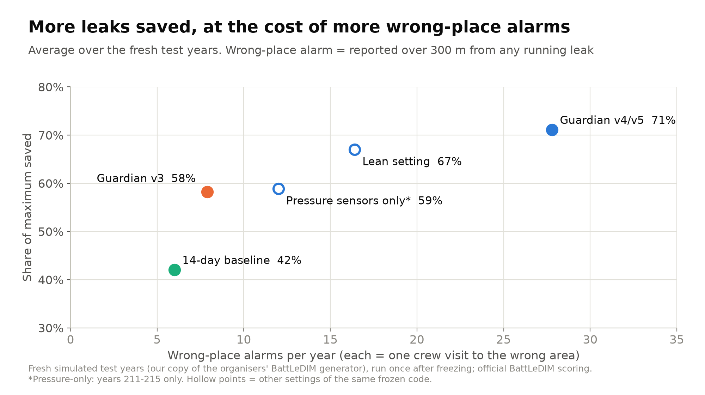
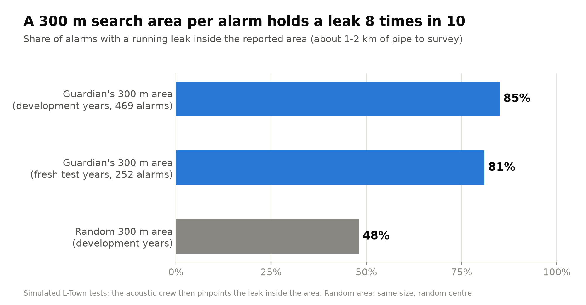

A digital twin of a water network that detects leaks early, points crews to a 300 m search area, and suggests a night pressure test before digging. Advisory only: operators approve every action. Built for the IECE 2026 Engineering Hackathon by the ChemE Club, Jubail Industrial College.




The method was developed on development years only, then frozen (code fingerprints recorded), and only then tested once on fresh simulated years that it had never seen, scored with the official BattLeDIM rules. The test years come from our copy of the organisers' simulator (it reproduces the official 2019 data to within 3 mm). The new version raises more wrong-place alarms than the previous one (about 28 a year against 8); a lean setting halves that for slightly lower savings.
L-Town and BattLeDIM: Vrachimis et al. 2022, JWRPM, doi 10.1061/(ASCE)WR.1943-5452.0001601; data Zenodo 4017659 (CC BY 4.0). BKTown: Mazaev et al. 2023, Water Supply; data Zenodo 7255403 (CC BY 4.0).